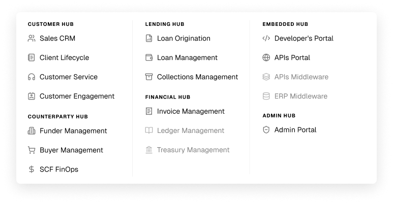
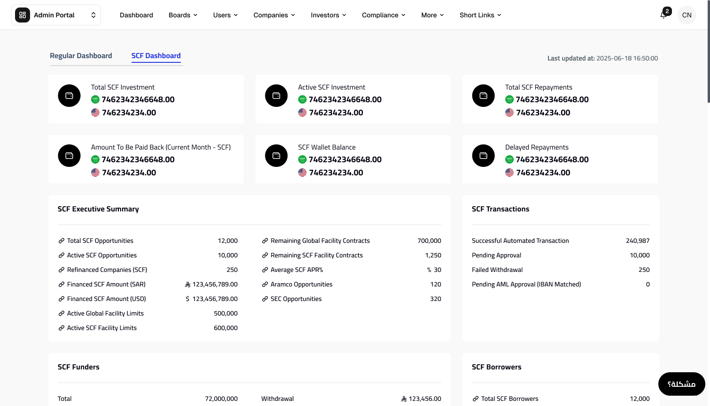
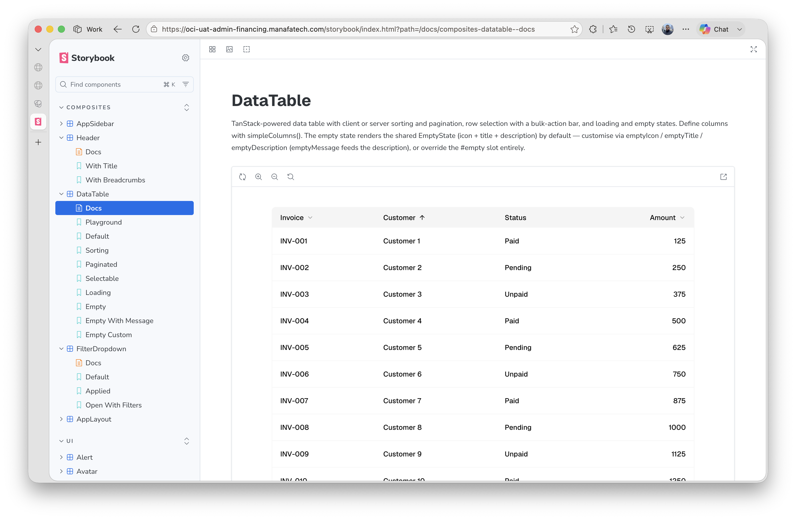

Activation · Phase 1
Live foundation
Channels · Platforms · Products · Partnerships
CHANNEL
Borrower-facing web and mobile. Internal workflows sit under focused platforms.
Live foundation
R61 spillover · design pending
14 tickets in testing
Phase II planned
Mobile activation and Phase 1 edge cases.
Phase 2 journey and CapEx experience.
Secondary users, Nafath and funder decisions.
Letters, summaries, messages and short links.
Activation V2 · DF-3357 / BSQ-2988CapEx web is planned for R61; mobile completion is planned for R62.
BACK OFFICE
One product shell, separate domain ownership and roadmaps.



Admin Portal remains available during the transition.Each focused platform owns its workflow and roadmap.
The next step is to continue by domain, not add more capability to the legacy portal.
Lead Management shipped in R61
Billing engine and core invoice operations
Supplier, instrument, offer and financing workflows
Phase 1 PRD complete · UX active
Defined scope · accountable owner · dedicated roadmap · measurable operating outcome
PRODUCTS
CapEx is moving through delivery; Lease Revenue Financing is defining the operating model.
Maximum single loan up to SAR 3M.
Eligible leases act as collateral instead of a traditional asset pledge.
CAPABILITY
Invoice Financing is the first automated decision model.
Company, financial and financing inputs
Outcome and opportunity creation
Each relationship keeps its own mandate and commercial rules while using a reusable operating flow.

SME Bank provides funds; Manafa originates and operates financing under agreed program rules.
OpenPriority, workflow and integration sequence.
A distinct program with its own mandate, target segment and portfolio rules.
OpenContract structure, mandate and operating responsibilities.Funding structures remain separate until each relationship and scope is confirmed.
OpenRelationship priority and reusable platform requirements.PARTNERSHIPS
Business owns the relationship; Product and Technology provide the reusable capability.
One partner-specific journey; reusable technical capabilities underneath.
Choose a partner to review the live position, dependency and next action.
The payroll-financing journey is live and operating.
Agree the next relationship enhancements and continue operational monitoring.


The postponed pilot is on hold pending partner availability.
Reconfirm timing, pilot ownership and business priority.


Dhamen is the intermediary. Nusuk assumptions are defined; Muqeem is waiting for go-live.
Confirm the first use case, production sequence and owner across the three parties.


Screens were received; Manafa's production webhook and production access remain open.
Close production access, validate the webhook and confirm launch readiness.
NOW
Digital Business scope across four delivery squads.
Supplier, instrument, offer and financing workflows released.
Funding models, reconciliation, AML and banking
Storybook, design system, SSO and controls
Activation V2, task types and user management
Lead Management and CRM enhancements
Business alignment required from the CBO portfolio.
Confirm OS roadmap, business sequence and external dependencies.
Confirm the proposition and AOP / Eijar operating model.
Prioritize post-Milestone 1 phases and automation policies.
Prioritize SME Bank, SDB and international programs.
Rank partner workstreams and set joint ownership.
Confirm the next Admin capabilities to move.
Questions and alignment